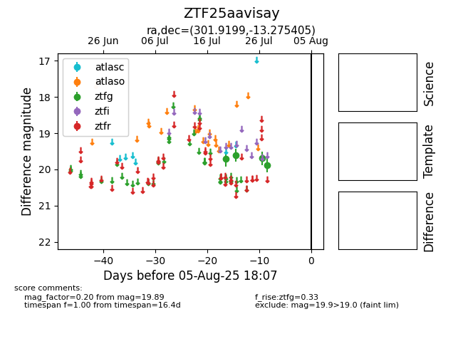

Target ZTF25aavisay at 2025-08-05 18:07, see:
FINK: fink-portal.org/ZTF25aavisay
Lasair: lasair-ztf.lsst.ac.uk/objects/ZTF25aavisay
ALeRCE: alerce.online/object/ZTF25aavisay
alt names
ZTF25aavisay (ztf,fink)
coordinates:
equatorial (ra, dec) = (301.9199,-13.27540)
galactic (l, b) = (29.2349,-22.80406)
photometry
last atlasc=nan, ztfg=19.89
1 atlasc, 4 ztfg detections
